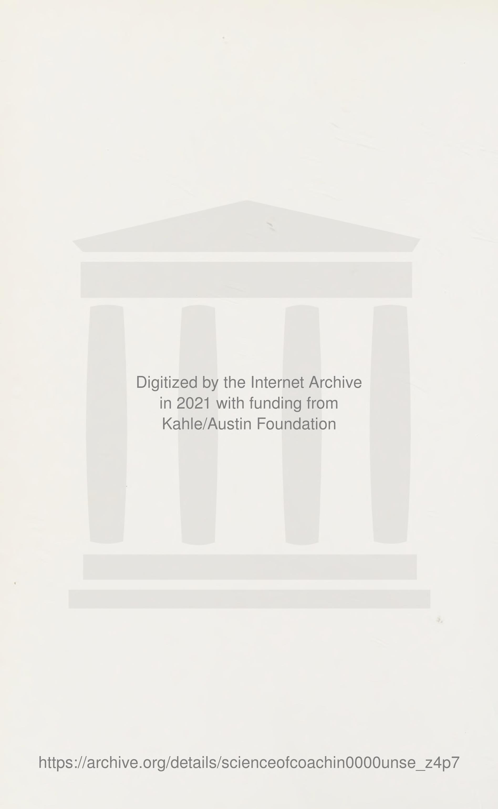
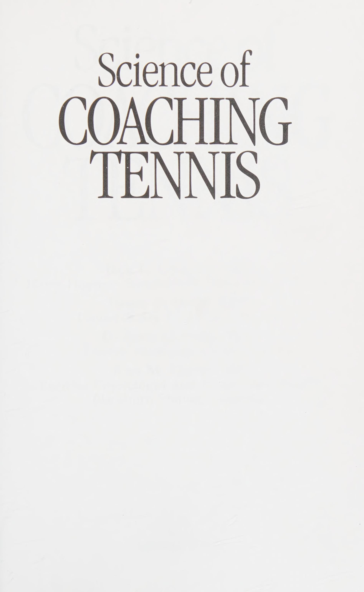
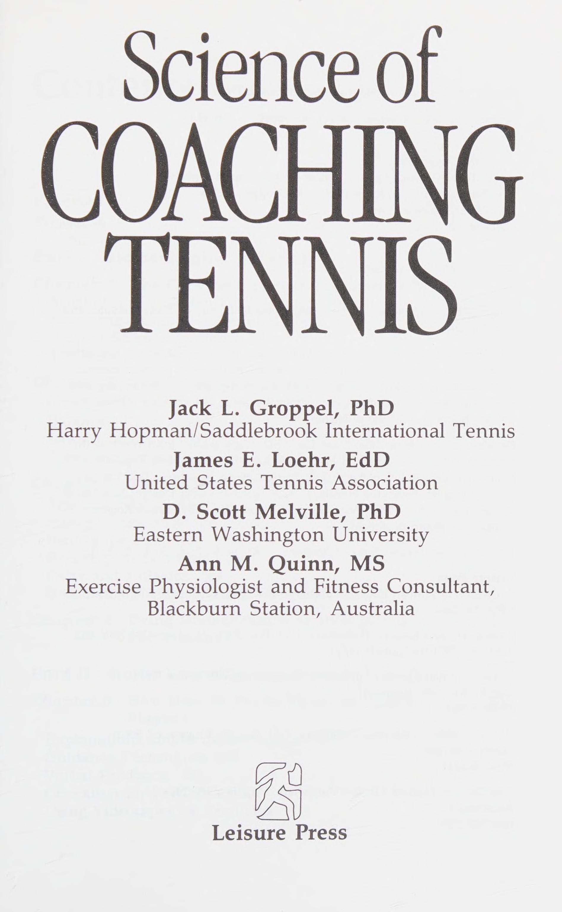
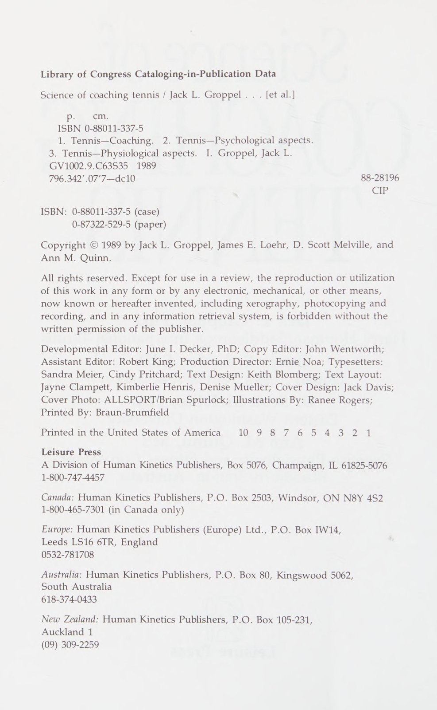
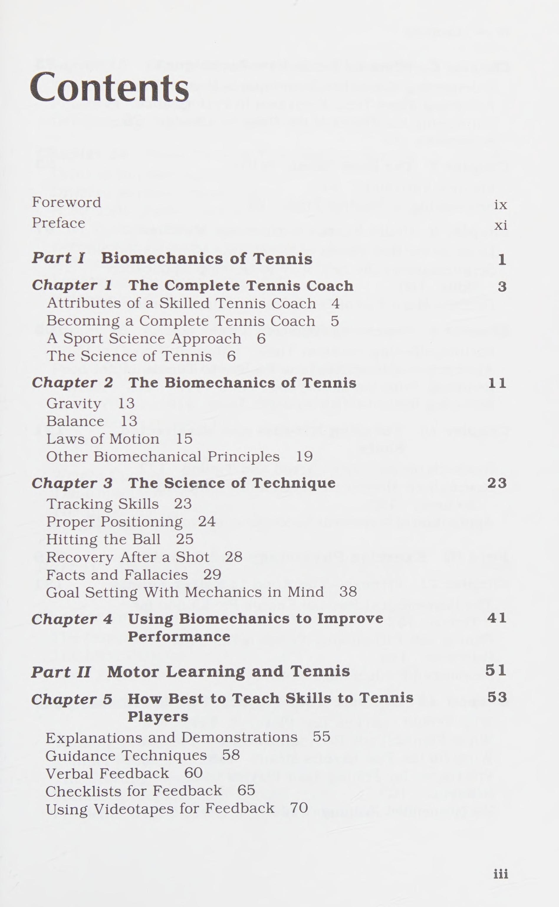
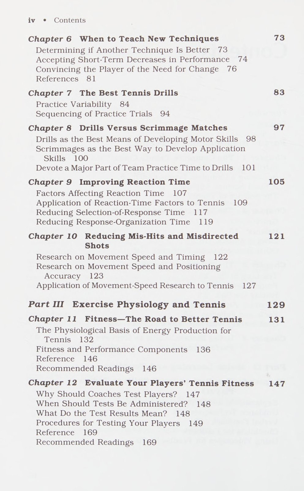
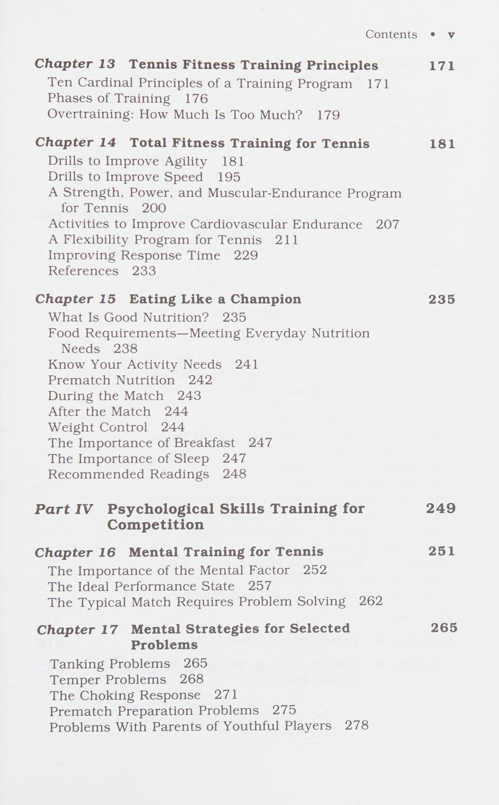

Phần 1: Sinh Cơ Học Quần Vợt: Nền Tảng Khoa Học Của Kỹ Thuật Đỉnh Cao
Cuốn sách Science of Coaching Tennis là công trình nghiên cứu quy mô của ba chuyên gia hàng đầu thuộc Hiệp hội Quần vợt Hoa Kỳ (USTA) và Human Kinetics: Tiến sĩ Jack Groppel (chuyên gia sinh cơ học), Tiến sĩ James E. Loehr (chuyên gia tâm lý học thể thao) và Peter Powless (huấn luyện viên cao cấp). Tác phẩm đã đặt dấu chấm hết cho kỷ nguyên huấn luyện cảm tính bằng cách áp dụng các nguyên lý vật lý, cơ học và sinh lý học chính xác vào từng pha bóng.
Phần này phân tích các quy luật sinh cơ học chi phối mọi cú đánh trên sân: Trọng lực, thăng bằng, các định luật Newton, chuỗi động học liên hoàn (kinetic chain) và cơ chế tạo lực tối ưu tại điểm tiếp xúc bóng.
1. Các Định Luật Chuyển Động Newton Trong Quần Vợt (Newton's Laws of Motion)
Mọi chuyển động của vợt và quả bóng đều tuân thủ ba định luật cơ học kinh điển:
- Định Luật Quán Tính (First Law - Inertia): Một vật thể đứng yên hoặc chuyển động thẳng đều sẽ duy trì trạng thái đó trừ khi có ngoại lực tác động. Trong quần vợt, để tăng tốc cây vợt từ vị trí đứng yên sau lưng, cơ thể phải kích hoạt các nhóm cơ lớn trước để vượt qua quán tính của khối lượng vợt.
- Định Luật Gia Tốc (Second Law - F = ma): Gia tốc của quả bóng tỷ lệ thuận với lực tác động và tỷ lệ nghịch với khối lượng. Để quả bóng bay nhanh hơn, người chơi phải gia tăng gia tốc của đầu vợt tại khoảnh khắc tiếp xúc thay vì chỉ dựa vào sức nặng của cánh tay.
- Định Luật Tác Dụng & Phản Tác Dụng (Third Law - Action & Reaction): Khi bàn chân người chơi đạp mạnh xuống mặt sân (action), mặt sân sẽ tác dụng một phản lực tương đương đẩy ngược lên cơ thể (ground reaction force). Đây chính là cội nguồn của toàn bộ lực đánh trong các cú thuận tay, trái tay và giao bóng hiện đại.

2. Chuỗi Động Học Liên Hoàn (The Kinetic Chain)

Tiến sĩ Jack Groppel đã chứng minh rằng lực đánh không sinh ra từ cánh tay độc lập, mà là kết quả của sự cộng dồn năng lượng qua một chuỗi các mắt xích cơ thể:
1. Bàn chân đẩy mạnh vào mặt sân (Ground Reaction Force).
2. Đầu gối duỗi thẳng truyền động năng lên khớp hông.
3. Khớp hông xoay mở kéo theo sự xoay của khối thân trên (Torso & Shoulders).
4. Bờ vai kéo cánh tay trên, khuỷu tay gập và bung ra.
5. Cẳng tay và cổ tay giải phóng năng lượng như một chiếc roi da quất vào bóng.
Nếu bất kỳ mắt xích nào trong chuỗi này bị ngắt quãng hoặc hoạt động sai nhịp, lực đánh sẽ sụt giảm nghiêm trọng và nguy cơ chấn thương khớp sẽ tăng vọt.
3. Nguyên Lý Thăng Bằng & Điểm Tiếp Xúc Bóng (Balance & Impact Mechanics)
Để đạt được sự nhất quán cơ học, người chơi phải duy trì thăng bằng động (dynamic balance) trong suốt quá trình vung vợt:
- Trọng Tâm Cơ Thể (Center of Gravity): Hạ thấp trọng tâm bằng cách uốn cong đầu gối giúp mở rộng chân đế nâng đỡ, giữ cho đầu và cột sống luôn thẳng đứng khi tiếp xúc bóng.
- Tâm Điểm Tiếp Xúc (Sweet Spot & Impact Time): Quả bóng chỉ tiếp xúc với mặt cước trong khoảng 4 đến 5 phần nghìn giây (0.004 đến 0.005 giây). Bất kỳ sự rung lắc hay thay đổi góc mặt vợt trong khoảnh khắc vi mô này đều làm chệch hướng quỹ đạo bóng.
- Phục Hồi Cơ Học Sau Đòn Đánh (Biomechanical Recovery): Động tác đưa vợt theo bóng (follow-through) đóng vai trò như hệ thống phanh hãm giảm tốc tự nhiên, phân tán lực cản để bảo vệ khớp vai và khuỷu tay khỏi hiện tượng vi chấn thương lặp lại.
Phần 2: Khoa Học Tiếp Thu Vận Động & Phương Pháp Huấn Luyện Kỹ Năng
Kỹ năng đánh bóng không thể được hình thành bền vững nếu huấn luyện viên chỉ đưa ra những mệnh lệnh một chiều mà không hiểu rõ cơ chế não bộ ghi nhận và điều khiển chuyển động cơ bắp. Khoa học tiếp thu vận động (Motor Learning) nghiên cứu quá trình chuyển hóa một động tác từ chỗ lúng túng, gượng gạo thành một phản xạ tự động hóa chuẩn xác dưới áp lực thi đấu khắc nghiệt.
Phần này trình bày ba giai đoạn lĩnh hội vận động, phương pháp tái cấu trúc kỹ thuật cho vận động viên, và nguyên lý thiết kế bài tập biến thiên dựa trên khoa học thần kinh vận động.
1. Ba Giai Đoạn Lĩnh Hội Kỹ Năng Vận Động (Stages of Motor Learning)
Theo mô hình Fitts & Posner được các tác giả USTA ứng dụng vào quần vợt, quá trình học tập vận động diễn ra qua ba bước tiến tuần tự:
- Giai Đoạn Nhận Thức (Cognitive Stage): Người chơi phải dùng ý thức để suy nghĩ về từng chi tiết động tác: Đặt chân ở đâu, mở vợt thế nào, xoay vai bao nhiêu độ. Các chuyển động diễn ra rời rạc, tiêu tốn nhiều năng lượng và dễ mắc lỗi. Huấn luyện viên cần đưa ra các chỉ dẫn ngắn gọn, trực quan và không nhồi nhét quá nhiều thông tin cùng lúc.
- Giai Đoạn Liên Kết (Associative Stage): Người chơi đã hiểu rõ khuôn mẫu chuyển động cơ bản và bắt đầu tự phát hiện ra lỗi sai của mình. Các cử động trở nên mượt mà và nhịp nhàng hơn. Trọng tâm lúc này là sự lặp lại kiên nhẫn để tinh chỉnh tính nhất quán.
- Giai Đoạn Tự Động Hóa (Autonomous Stage): Kỹ thuật đã được khắc sâu vào hệ thần kinh vận động (muscle memory). Người chơi không còn cần suy nghĩ về cây vợt hay bàn chân mà có thể dồn 100% sự tập trung vào việc đọc chiến thuật của đối thủ, điểm rơi của quả bóng và điều kiện gió.
2. Khi Nào & Làm Thế Nào Để Thay Đổi Kỹ Thuật (Technique Modification)
Thay đổi kỹ thuật của một vận động viên đã hình thành thói quen lâu năm là một trong những quyết định nhạy cảm nhất của một huấn luyện viên:
- Tiêu Chí Quyết Định Thay Đổi: Chỉ can thiệp thay đổi kỹ thuật khi: Kỹ thuật hiện tại gây nguy cơ chấn thương mãn tính, hoặc kỹ thuật cũ tạo ra một "trần giới hạn hiệu suất" (performance ceiling) ngăn cản vận động viên tiến lên cấp độ thi đấu cao hơn.
- Quy Trình Từng Bước: Bắt đầu sửa đổi từ bài tập nạp bóng tĩnh cự ly gần, tiến dần lên đánh bóng chậm qua lại, và chỉ đưa vào thi đấu tính điểm khi động tác mới đã đạt độ ổn định trên 80%.

3. Thiết Kế Bài Tập: Cố Định So Với Biến Thiên (Drills vs Scrimmages)
Khoa học thần kinh vận động chỉ ra sự khác biệt sâu sắc giữa hai hình thức tập luyện:
- Tập Luyện Lặp Lại Cố Định (Blocked Practice): Đánh đi đánh lại cùng một cú đánh từ cùng một vị trí. Hình thức này giúp người chơi xây dựng sự tự tin ban đầu rất nhanh, nhưng khả năng lưu giữ dài hạn và chuyển giao vào trận đấu thực tế lại rất thấp.
- Tập Luyện Biến Thiên Ngẫu Nhiên (Random Practice): Đan xen liên tục giữa các cú đánh khác nhau: Một quả thuận tay cao, một quả cắt trái tay, một quả lốp bóng và một quả bắt lưới. Hình thức này buộc não bộ phải liên tục tái giải quyết vấn đề cơ học, giúp kỹ năng được khắc sâu bền vững vào trí nhớ vận động.
- Tỷ Lệ Huấn Luyện Vàng 70:30: Các tác giả khuyến nghị dành 70% thời gian buổi tập cho các bài tập cô lập có mục tiêu (drills) để hoàn thiện kỹ năng, và 30% thời gian cho các trận đấu tập thực chiến (scrimmages) để kiểm tra khả năng áp dụng dưới áp lực điểm số.
Phần 3: Sinh Lý Học Thể Lực, Chu Kỳ Huấn Luyện & Dinh Dưỡng Nhà Vô Địch
Một tay vợt có kỹ thuật hoàn hảo và tư duy chiến thuật sắc bén vẫn sẽ sụp đổ hoàn toàn nếu cỗ máy sinh học của họ bị cạn kiệt năng lượng ở set đấu thứ ba. Quần vợt là một môn thể thao đòi hỏi sự kết hợp phức tạp giữa hệ thống năng lượng kỵ khí (ATP-CP và axit lactic) cho các pha bứt tốc bộc phát và hệ thống ái khí (aerobic) để phục hồi nhanh chóng giữa các điểm số kéo dài hàng giờ đồng hồ.
Phần này phân tích 10 nguyên lý huấn luyện thể lực cốt lõi theo tiêu chuẩn của Hiệp hội Quần vợt Hoa Kỳ (USTA), hệ thống chu kỳ hóa thể lực và chế độ dinh dưỡng tối ưu cho vận động viên thi đấu.
1. Mười Nguyên Lý Huấn Luyện Thể Lực USTA (Ten Cardinal Principles)
Để xây dựng một chương trình huấn luyện thể lực an toàn và đạt hiệu quả cực đại, huấn luyện viên cần tuân thủ nghiêm ngặt các nguyên tắc sinh lý học:
- Nguyên Lý Tăng Tải Lũy Tiến (Progressive Overload): Để cơ bắp và hệ tim mạch thích nghi và phát triển, khối lượng hoặc cường độ vận động phải được tăng dần theo từng tuần một cách có kiểm soát.
- Nguyên Lý Tính Đặc Thù (Specificity): Mọi bài tập thể lực phải mô phỏng chính xác các góc độ chuyển động, nhóm cơ tham gia và khoảng thời gian hoạt động thực tế trên sân quần vợt.
- Nguyên Lý Chu Kỳ Hóa (Periodization): Phân chia năm huấn luyện thành các giai đoạn rõ rệt: Giai đoạn chuẩn bị chung (xây dựng nền tảng), giai đoạn tiền thi đấu (tăng cường sức mạnh bộc phát), giai đoạn thi đấu (duy trì phong độ cao nhất) và giai đoạn chuyển tiếp (nghỉ ngơi tích cực).
- Nguyên Lý Phục Hồi (Recovery Principle): Sự phát triển của cơ bắp và hệ thần kinh không diễn ra trong lúc tập luyện mà diễn ra trong quá trình nghỉ ngơi sau buổi tập. Thiếu thời gian phục hồi sẽ dẫn đến hội chứng quá tải (overtraining syndrome).
- Nguyên Lý Cá Nhân Hóa (Individual Differences): Mỗi vận động viên có cấu trúc giải phẫu, tỷ lệ sợi cơ co rút nhanh/chậm và tốc độ phục hồi sinh học khác nhau, do đó cần có giáo án thể lực riêng biệt.

2. Phát Triển Thể Lực Toàn Diện Cho Quần Vợt (Total Fitness Architecture)
Một chương trình thể lực tiêu chuẩn gồm năm trụ cột không thể tách rời:
1. Độ Nhanh Nhẹn (Agility): Các bài tập con thoi đổi hướng đột ngột, dừng lại trong tích tắc và bứt tốc tức thì theo tín hiệu thị giác.
2. Sức Mạnh Bộc Phát (Power): Rèn luyện sức mạnh bùng nổ của cơ bắp thông qua các bài tập plyometric và ném bóng tạ theo các mặt phẳng chuyển động xoay thân.
3. Sức Bền Tim Mạch Ngắt Quãng: Huấn luyện ngắt quãng cường độ cao (HIIT) mô phỏng chính xác nhịp độ 10 đến 15 giây vận động toàn lực xen kẽ 20 giây nghỉ ngơi.
4. Độ Dẻo Dai & Linh Hoạt Khớp: Duy trì tầm vận động tối đa của khớp vai, khớp háng và cột sống thắt lưng để thực hiện các động tác vặn xoắn an toàn.

3. Dinh Dưỡng Khoa Học Của Nhà Vô Địch (Eating Like a Champion)

Dinh dưỡng là nguồn nhiên liệu trực tiếp nuôi dưỡng cơ bắp và tế bào não bộ của vận động viên:
- Carbohydrate Phức Hợp (Nguồn Nhiên Liệu Vàng): Chiếm 55% đến 65% tổng năng lượng khẩu phần hằng ngày. Bổ sung từ ngũ cốc nguyên hạt, gạo lứt, khoai lang và trái cây tươi để duy trì lượng glycogen dự trữ dồi dào trong gan và cơ bắp.
- Protein Chất Lượng Cao: Chiếm 15% đến 20% năng lượng, cung cấp các axit amin thiết yếu để sửa chữa và tái tạo các sợi cơ bị tổn thương sau những buổi tập nặng.
- Chất Béo Tốt & Vitamin Khoáng Chất: Dầu ô liu, quả bơ, các loại hạt và cá béo cung cấp axit béo omega-3 giúp chống viêm khớp và tăng cường chức năng tim mạch.
- Chiến Lược Cung Cấp Nước & Điện Giải: Mất nước chỉ 2% trọng lượng cơ thể có thể làm suy giảm 10% đến 20% độ chuẩn xác của cú đánh và tăng gấp đôi cảm giác kiệt sức. Cần uống đều đặn 150 đến 250 ml nước chứa điện giải sau mỗi 15 phút tập luyện dưới trời nóng.
Phần 4: Tâm Lý Học Thi Đấu & Trạng Thái Hiệu Suất Tối Ưu (IPS)
Đỉnh cao của tác phẩm Science of Coaching Tennis là phần đóng góp mang tính cách mạng của Tiến sĩ James E. Loehr về tâm lý học thể thao. Trong nhiều thập kỷ, tâm lý thi đấu bị coi là một khái niệm trừu tượng, bí ẩn và không thể huấn luyện được. Tiến sĩ Loehr đã biến tâm lý thành một hệ thống kỹ năng khoa học có thể đo lường, rèn luyện và nâng cấp giống như một cú thuận tay hay một bài tập thể lực.
Phần kết này phân tích mô hình Trạng thái Hiệu suất Tối ưu (Ideal Performance State - IPS), quy trình nghi thức 16 giây giữa các điểm số và phương pháp khắc phục những điểm yếu tâm lý cốt tử trên sân đấu.
1. Trạng Thái Hiệu Suất Tối Ưu (Ideal Performance State - IPS)
Tiến sĩ James E. Loehr định nghĩa IPS là trạng thái tâm sinh lý đặc biệt mà tại đó một vận động viên thi đấu thăng hoa nhất mà không hề cảm thấy gượng gạo hay sợ hãi:
- Năng Lượng Tích Cực Cao (High Positive Energy): Cảm giác hưng phấn, tràn đầy nhiệt huyết, yêu thích thử thách và sẵn sàng chiến đấu, hoàn toàn trái ngược với năng lượng tiêu cực như tức giận, thất vọng hoặc lo âu.
- Bình Tĩnh & Thả Lỏng Cơ Thể: Cơ bắp không bị co thắt hay gồng cứng, nhịp thở sâu và đều đặn, nhịp tim được kiểm soát ở mức độ kích thích tối ưu (optimal arousal level).
- Khóa Chặt Vào Giây Phút Hiện Tại: Tâm trí không bận tâm đến những lỗi đánh hỏng ở set trước, cũng không lo lắng về tỷ số hay kết quả chung cuộc ở set sau. Toàn bộ sự chú ý chỉ tập trung vào một quả bóng duy nhất ngay trước mắt.
- Cảm Giác Tự Tin Tuyệt Đối: Niềm tin vững chắc vào khả năng giải quyết vấn đề của bản thân, xem mọi pha bóng khó khăn như một cơ hội để thể hiện bản lĩnh.
2. Nghi Thức 16 Giây Giữa Các Điểm Số (The 16-Second Between-Points Ritual)
Một phát hiện chấn động của Tiến sĩ Loehr khi nghiên cứu các huyền thoại quần vợt thế giới là: Trong một trận đấu kéo dài 2 giờ, thời gian thực tế mà bóng bay trên sân chỉ chiếm khoảng 15 đến 20 phút. Hơn 100 phút còn lại là thời gian chết giữa các điểm số. Kẻ chiến thắng là người biết làm chủ khoảng thời gian 16 đến 20 giây giữa các pha bóng này:
1. Giai Đoạn Phản Ứng Tích Cực (0 đến 3 giây): Ngay khi pha bóng kết thúc, quay lưng lại lưới, giữ thẳng lưng, cằm ngẩng cao. Tuyệt đối không cúi đầu gục ngã hay đập vợt. Buông bỏ hoàn toàn điểm số vừa qua.
2. Giai Đoạn Thư Giãn (4 đến 8 giây): Chuyển vợt sang tay không thuận, bước đi thong thả về phía sau vạch cuối sân, nhìn vào dây vợt, thở sâu từ cơ hoành để hạ nhịp tim xuống 10 đến 15 nhịp mỗi phút.
3. Giai Đoạn Chuẩn Bị Chiến Thuật (9 đến 13 giây): Hình dung rõ ràng trong đầu kịch bản của điểm tiếp theo: Giao bóng vào đâu, xoáy thế nào, hoặc trả giao bóng vào góc nào.
4. Giai Đoạn Nghi Thức Trước Điểm Số (14 đến 16 giây): Thực hiện chuỗi hành động lặp lại quen thuộc (đập bóng 3 lần, hít một hơi sâu) và đưa cơ thể vào trạng thái sẵn sàng bùng nổ.

3. Khắc Phục Các Khiếm Khuyết Tâm Lý Phổ Biến (Mental-Skill Remedies)
Các giải pháp tâm lý thực hành giúp giải cứu vận động viên khi gặp khủng hoảng trong trận đấu:
- Khắc Phục Nỗi Sợ Hãi & Thiếu Tự Tin: Thay vì tập trung vào nỗi sợ thua cuộc, hãy chuyển hướng chú ý sang hành động cụ thể: Bước chân nhanh hơn, nhìn bóng rõ hơn và đánh bóng qua lưới với độ cao an toàn 1 mét.
- Khắc Phục Cơn Giận Dữ & Mất Kiểm Soát: Khi cảm thấy sự bực tức dâng trào sau một quyết định sai lầm, hãy áp dụng quy tắc "Dừng Lại - Thở Sâu - Tái Lập". Không vội vàng giao bóng tiếp theo khi tâm trí chưa lấy lại được sự tĩnh lặng.
- Xử Lý Hiện Tượng Căng Cứng Tay (Choking Under Pressure): Tập trung hoàn toàn vào nhịp thở ra chậm rãi ngay tại thời điểm chạm bóng, giúp giải phóng sự căng cứng của cơ bắp cẳng tay và vai.